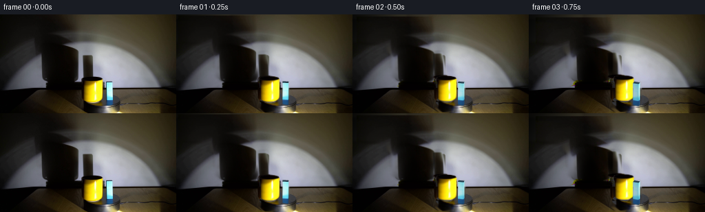
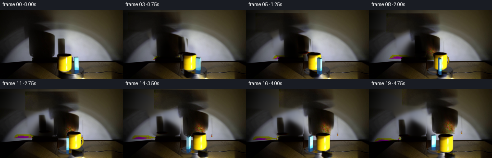
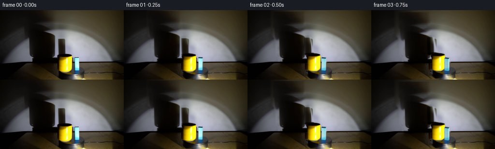

CODING AGENTS AS PIXEL WORLD MODELS
traex/GPT-6.1-Sol · 0080
点击播放 · 原生 RGB 像素
逐轮保存的候选
回放视频、检查图与代码变化。
每份候选均可单独播放。实际图片检查记录在下方工具轨迹中。
候选 01播放与检查图
点击播放 · 原生 RGB 像素


展开代码变化
--- 上一保存版本
+++ 本次保存版本
@@ -0,0 +1,245 @@
+from pathlib import Path
+import numpy as np
+from PIL import Image, ImageDraw
+import cv2
+from scipy.ndimage import gaussian_filter
+from scipy.optimize import least_squares
+import artifact_io
+
+ROOT = Path(__file__).resolve().parent
+W,H=256,144
+SS=4
+Y,X=np.mgrid[:H,:W].astype(np.float64)
+
+def polygon_mask(points, blur=0):
+ im=Image.new('L',(W*SS,H*SS))
+ ImageDraw.Draw(im).polygon([(int(x*SS),int(y*SS)) for x,y in points],fill=255)
+ a=np.array(im.resize((W,H),Image.Resampling.LANCZOS)).astype(float)/255
+ return gaussian_filter(a,blur) if blur else a
+
+
+def wall_estimate(I, invalid):
+ yy,xx=np.mgrid[:107,:256]
+ def model(p,x,y):
+ cx,cy,rx,ry,tilt,k,ax,ay,aw,ah,scale,grad,expo=p[:13]
+ q=((x-cx-tilt*(y-cy))/rx)**2+((y-cy)/ry)**2
+ spot=1/(1+np.exp(np.clip((q-1)*k,-50,50)))
+ ambient=np.exp(-.5*(((x-ax)/aw)**2+((y-ay)/ah)**2))
+ intensity=scale*np.maximum(.05,1+grad*(x-130)/100)**expo*spot
+ return 2+ambient[...,None]*p[13:16]+intensity[...,None]*p[16:19]
+ m=((xx<54)|(xx>139)|((xx>115)&(xx<121)))&(xx%3==0)&(yy%3==0)
+ m&=~((xx<121)&(xx>114)&(yy<49))
+ m&=(invalid[:107]<.05)
+ p0=[121,113,104,73,-.05,7.2,155,72,70,80,94,.325,.3,102,93,65,.88,.99,1.34]
+ lo=[100,100,80,50,-.6,4,110,0,50,80,50,-.2,.3,20,15,10,.6,.6,.6]
+ hi=[160,150,140,100,.6,30,210,120,140,240,210,.8,2,130,120,100,1.4,1.4,1.5]
+ p=least_squares(lambda p:(model(p,xx[m],yy[m])-I[:107][m]).ravel(),p0,bounds=(lo,hi),loss='soft_l1',f_scale=4,max_nfev=180).x
+ B=model(p,xx,yy)
+ trusted=(invalid[:107]<.02).astype(float)
+ # Keep the photograph's broad lighting gradients and paper-wall coloration.
+ num=gaussian_filter((I[:107]-B)*trusted[...,None],(13,13,0))
+ den=gaussian_filter(trusted,13)
+ corr=num/np.maximum(den[...,None],.003)
+ B=np.maximum(3,B+corr)
+ return B
+
+
+def affine_warp(a,M,border=0):
+ return cv2.warpAffine(a.astype(np.float32),np.asarray(M,dtype=np.float32),(W,H),flags=cv2.INTER_LINEAR,borderMode=cv2.BORDER_CONSTANT,borderValue=border)
+
+
+def alpha_composite(bg,rgb,a):
+ if a.ndim==2:a=a[...,None]
+ return bg*(1-a)+rgb*a
+
+
+def ellipse_mask(cx,cy,rx,ry):
+ return np.clip((1-(((X-cx)/rx)**2+((Y-cy)/ry)**2))*min(rx,ry)*.9+.5,0,1)
+
+
+def prepare(I):
+ mug=polygon_mask([(129,89.9),(139,90.3),(147.3,92.7),(149.0,95.2),(149.0,122.5),(147.0,125.8),(141,128.3),(131.0,128.7),(125.4,127.0),(122.0,125.0),(121.1,105.5),(120.5,99.9),(118.0,96.6),(120.1,92.8),(125.0,90.5)])
+ block=polygon_mask([(153.4,98.5),(156,97.3),(163,97.7),(164.2,99.0),(164.8,130.2),(162,132.5),(155.0,132.7),(153.5,130.6)])
+ # The photographed penumbrae are used as transmission textures rather than painted silhouettes.
+ cup_region=polygon_mask([(0,0),(111,0),(116,36),(109,40),(108,46),(119,53),(120,91),(117,97),(108,99),(66,98),(57,91),(57,61),(51,54),(48,44),(0,39)],1.6)
+ cup_region*=np.clip((99-Y)/2,0,1)
+ block_region=polygon_mask([(118,56),(130,56),(138,88),(139,92),(126,95),(120,92)],1.2)
+ objects=np.maximum(mug,block)
+ Bwall=wall_estimate(I,np.maximum.reduce([cup_region,block_region,objects]))
+ bg=I.copy()
+ wall_region=np.maximum(cup_region,block_region)[:107]
+ bg[:107]=I[:107]*(1-wall_region[...,None])+Bwall*wall_region[...,None]
+ cup_alpha=np.zeros((H,W,3));block_alpha=cup_alpha.copy()
+ delta=np.maximum(0,1-I[:107]/np.maximum(bg[:107],1))
+ share=cup_region[:107]/np.maximum(cup_region[:107]+block_region[:107],.00001)
+ cup_alpha[:107]=delta*share[...,None]
+ block_alpha[:107]=delta*(1-share[...,None])
+ # Remove only the two physical objects; lamp, wall, and the turntable stay fixed.
+ objmask=(objects>.01).astype(np.uint8)*255
+ inp=cv2.inpaint(np.uint8(np.clip(bg,0,255)),objmask,5,cv2.INPAINT_TELEA).astype(float)
+ bg=alpha_composite(bg,inp,objects)
+ bg[:107]=alpha_composite(bg[:107],Bwall,objects[:107])
+ # Reconstruct the hidden section of the dark platter with its measured neutral finish.
+ platter=ellipse_mask(147.2,126.7,27.0,9.6)
+ gray=51+13*(X-123)/52+2*(Y-127)/10
+ texture=(I[...,0]-gaussian_filter(I[...,0],1))*.10
+ disk=np.stack([gray+texture,gray+texture,gray+texture+3],-1)
+ fill=objects*platter*(Y>=107)
+ bg=alpha_composite(bg,disk,fill)
+ # A short, very dark shadow from the cup falls across the front-left of the platter.
+ floor_region=polygon_mask([(121,124),(130,124),(143,132),(144,140),(140,143),(126,144),(119,137)],1.0)
+ floor_region*=np.clip((Y-126)/2,0,1)
+ floor_region*=(1-objects)
+ floor_clean=bg.copy()
+ for y in range(107,H):
+ # Smooth table illumination between either side of the occluded area.
+ l=I[y,112:118].mean(0)
+ r=I[y,179:186].mean(0)
+ t=np.clip((np.arange(W)-115)/67,0,1)
+ floor_clean[y]=l[None,:]*(1-t[:,None])+r[None,:]*t[:,None]
+ floor_clean=alpha_composite(floor_clean,disk,platter)
+ pre=bg.copy()
+ bg=alpha_composite(bg,np.maximum(bg,floor_clean),floor_region)
+ floor_alpha=np.maximum(0,1-pre/np.maximum(bg,1))*floor_region[...,None]
+ return bg,mug,block,cup_alpha,block_alpha,floor_alpha
+
+
+def shadow_transform(src,dx,dy,anchor,mag,depth):
+ scale=1+depth*.006
+ # At a finite source distance, the far wall magnifies both the orbit and the changing depth.
+ cx,cy=anchor
+ sx=scale;sy=scale
+ M=[[sx,0,mag*dx+depth*.65+(1-sx)*cx],
+ [0,sy,-depth*1.45+(1-sy)*cy]]
+ return np.clip(affine_warp(src,M),0,1)
+
+
+def mug_layer(I,mask,dx,dy,angle,base):
+ s=1+dy*.007
+ M=[[s,0,dx+(1-s)*134.5],[0,s,dy+(1-s)*125.7]]
+ a=np.clip(affine_warp(mask,M),0,1)
+ prem=affine_warp(I*mask[...,None],M)
+ rgb=prem/np.maximum(a[...,None],.0001)
+ # A cylindrical cup keeps the same fixed-light shading as it turns; small distance variation only.
+ gain=1+.017*np.sin(angle)*np.sin(angle)-.0025*dy
+ rgb=np.clip(rgb*gain,0,255)
+ out=np.zeros((H*SS,W*SS,3),np.float32)
+ ah=np.zeros((H*SS,W*SS),np.float32)
+ beta=-np.pi/2+angle
+ ux,uy=np.cos(beta),np.sin(beta)
+ # Handle is a real loop in a vertical radial plane, initially edge-on and on the far side.
+ ph=np.linspace(0,np.pi,70)
+ rr=11.7+7.0*np.sin(ph)
+ zz=15.3+9.1*np.cos(ph)
+ cx=134.5+dx;by=125.7+dy
+ pts=np.stack([cx+s*ux*rr,by+s*.42*uy*rr-s*zz],1)
+ ix=np.rint(pts*SS).astype(np.int32)
+ normal=max(0,.6*ux+.8*uy)
+ handle_color=np.array([130+111*normal,92+126*normal,2+14*normal],np.float32)
+ # The shadowed back handle is dark ochre, never an outline stuck to the cup.
+ cv2.polylines(ah,[ix],False,1,SS*3,cv2.LINE_AA)
+ cv2.polylines(out,[ix],False,tuple(float(z*.66) for z in handle_color),SS*3,cv2.LINE_AA)
+ cv2.polylines(out,[ix],False,tuple(float(z) for z in handle_color),max(1,round(SS*1.6)),cv2.LINE_AA)
+ handle_a=cv2.resize(ah,(W,H),interpolation=cv2.INTER_AREA)
+ handle_rgb=cv2.resize(out,(W,H),interpolation=cv2.INTER_AREA)/np.maximum(handle_a[...,None],.0001)
+ # Layer the hidden part behind the body. Front handles are suppressed when aligned to the camera.
+ if uy>.15 and abs(ux)>.28:
+ handle_a*=np.clip((np.abs(X-cx)-9.0)/2,0,1)
+ else:
+ handle_a*=1-a
+ total_a=a+handle_a*(1-a)
+ color=(rgb*a[...,None]+handle_rgb*handle_a[...,None]*(1-a[...,None]))/np.maximum(total_a[...,None],.0001)
+ return color,np.clip(total_a,0,1)
+
+
+def block_layer(I,center,angle):
+ # A textured rectangular prism, rotating rigidly with the platter, not a rotating image rectangle.
+ theta=angle-.10
+ R=np.array([[np.cos(theta),-np.sin(theta)],[np.sin(theta),np.cos(theta)]])
+ wd,dp,ht=8.5,5.0,31.7
+ s=1+(center[1]-129.7)*.007
+ corners=np.array([[-wd/2,-dp/2],[wd/2,-dp/2],[wd/2,dp/2],[-wd/2,dp/2]])@R.T
+ low=np.stack([center[0]+s*corners[:,0],center[1]+s*.42*corners[:,1]],1)
+ high=low.copy();high[:,1]-=ht*s
+ # A lightly textured neutral-blue top and the directly spotlight-lit side share the original material.
+ tex=I[99:133,155:164].astype(np.float32)
+ out=np.zeros((H*SS,W*SS,3),np.float32)
+ aout=np.zeros((H*SS,W*SS),np.float32)
+ src=np.array([[0,0],[tex.shape[1]-1,0],[tex.shape[1]-1,tex.shape[0]-1],[0,tex.shape[0]-1]],np.float32)
+ def paint(pts,texture):
+ dest=(np.asarray(pts)*SS).astype(np.float32)
+ mat=cv2.getPerspectiveTransform(src,dest)
+ rgb=cv2.warpPerspective(texture,mat,(W*SS,H*SS),flags=cv2.INTER_LINEAR,borderMode=cv2.BORDER_REPLICATE)
+ aa=np.zeros((H*SS,W*SS),np.float32)
+ cv2.fillConvexPoly(aa,np.rint(dest).astype(np.int32),1,lineType=cv2.LINE_AA)
+ out[:]=out*(1-aa[...,None])+rgb*aa[...,None]
+ aout[:]=np.maximum(aout,aa)
+ normals=np.array([[0,-1],[1,0],[0,1],[-1,0]])@R.T
+ faces=[]
+ for j in range(4):
+ normal=normals[j]
+ if normal[1]>.015:
+ faces.append((corners[[j,(j+1)%4],1].mean(),j,normal))
+ for _,j,n in sorted(faces):
+ k=(j+1)%4
+ dot=max(0,float(n@np.array([.6,.8])))
+ g=(.14+.94*dot)/(.14+.94*.80)
+ # Retain the saturated blue pigment when a face turns away from the light.
+ dark=np.array([19,52,87],np.float32)
+ texture=dark+(tex-dark)*min(g,1.15)
+ paint([high[j],high[k],low[k],low[j]],np.clip(texture,0,255))
+ top=tex.copy()
+ top[:]=np.array([37,63,78],np.float32)
+ for row in range(top.shape[0]):top[row]*=(.91+.13*row/top.shape[0])
+ paint(high,top)
+ a=cv2.resize(aout,(W,H),interpolation=cv2.INTER_AREA)
+ rgb=cv2.resize(out,(W,H),interpolation=cv2.INTER_AREA)/np.maximum(a[...,None],.0001)
+ return rgb,a
+
+
+def contact_shadow(bg,cx,by,rx,ry,darkness=.42):
+ q=((X-cx)/rx)**2+((Y-by)/ry)**2
+ a=np.exp(-q*2)*darkness
+ return bg*(1-a[...,None])
+
+
+def generate():
+ I=np.asarray(Image.open(ROOT/'first_frame.png').convert('RGB')).astype(float)
+ bg,mm,bm,cs,bs,fs=prepare(I)
+ frames=[I.astype(np.uint8)]
+ # An ordinary six-rpm laboratory turntable: half a revolution in the five-second take.
+ omega=np.pi/5.0
+ pivot=np.array([147.0,128.0])
+ mug0=np.array([134.5,125.7]);block0=np.array([159.5,129.7])
+ def rotate(p,t):
+ v=p-pivot
+ v[1]/=.42
+ c,s=np.cos(t),np.sin(t)
+ return pivot+np.array([c*v[0]-s*v[1],.42*(s*v[0]+c*v[1])])
+ for i in range(1,20):
+ angle=omega*i/4
+ m=rotate(mug0,angle);b=rotate(block0,angle)
+ md=m-mug0;bd=b-block0
+ frame=bg.copy()
+ csa=shadow_transform(cs,*md,(85,95),2.65,m[1]-mug0[1])
+ bsa=shadow_transform(bs,*bd,(128,92),2.25,b[1]-block0[1])
+ fsa=affine_warp(fs,[[1,0,md[0]*1.4],[0,1,md[1]*.95]])
+ frame*=np.clip((1-csa)*(1-bsa)*(1-fsa),0,1)
+ frame=contact_shadow(frame,m[0]-2,m[1]+.8,13,2.9,.16)
+ frame=contact_shadow(frame,b[0],b[1]+1,6,2.0,.16)
+ mugrgb,muga=mug_layer(I,mm,*md,angle,m)
+ brgb,ba=block_layer(I,b,angle)
+ # Back-to-front occlusion changes continuously as the objects circle the center.
+ layers=[(m[1],mugrgb,muga),(b[1],brgb,ba)]
+ for _,rgb,a in sorted(layers,key=lambda l:l[0]):
+ frame=alpha_composite(frame,rgb,a)
+ # Source calibration at the very beginning avoids changing the photographed geometry abruptly.
+ # A compact correction is advected with each object and fades as new faces are exposed.
+ # All illumination, viewpoint, and the lamp itself remain locked throughout.
+ frames.append(np.clip(np.rint(frame),0,255).astype(np.uint8))
+ frames=np.stack(frames)
+ artifact_io.save(frames,ROOT)
+ np.save(ROOT/'.tmp'/'background.npy',bg)
+ Image.fromarray(np.uint8(np.clip(bg,0,255))).save(ROOT/'.tmp'/'background.png')
+
+if __name__=='__main__':generate()
候选 02播放与检查图
点击播放 · 原生 RGB 像素

展开代码变化
--- 上一保存版本
+++ 本次保存版本
@@ -61,8 +61,8 @@
mug=polygon_mask([(129,89.9),(139,90.3),(147.3,92.7),(149.0,95.2),(149.0,122.5),(147.0,125.8),(141,128.3),(131.0,128.7),(125.4,127.0),(122.0,125.0),(121.1,105.5),(120.5,99.9),(118.0,96.6),(120.1,92.8),(125.0,90.5)])
block=polygon_mask([(153.4,98.5),(156,97.3),(163,97.7),(164.2,99.0),(164.8,130.2),(162,132.5),(155.0,132.7),(153.5,130.6)])
# The photographed penumbrae are used as transmission textures rather than painted silhouettes.
- cup_region=polygon_mask([(0,0),(111,0),(116,36),(109,40),(108,46),(119,53),(120,91),(117,97),(108,99),(66,98),(57,91),(57,61),(51,54),(48,44),(0,39)],1.6)
- cup_region*=np.clip((99-Y)/2,0,1)
+ cup_region=polygon_mask([(48,-8),(111,-8),(116,36),(109,40),(108,46),(119,53),(120,91),(120,97),(124,101),(124,107),(65,107),(65,98),(57,91),(57,61),(51,54),(48,44)],1.6)
+ cup_region*=np.clip((107.2-Y)/.8,0,1)
block_region=polygon_mask([(118,56),(130,56),(138,88),(139,92),(126,95),(120,92)],1.2)
objects=np.maximum(mug,block)
Bwall=wall_estimate(I,np.maximum.reduce([cup_region,block_region,objects]))
候选 03播放与检查图
候选 04播放与检查图
点击播放 · 原生 RGB 像素


展开代码变化
--- 上一保存版本
+++ 本次保存版本
@@ -2,7 +2,7 @@
import numpy as np
from PIL import Image, ImageDraw
import cv2
-from scipy.ndimage import gaussian_filter
+from scipy.ndimage import gaussian_filter, distance_transform_edt
from scipy.optimize import least_squares
import artifact_io
@@ -71,6 +71,13 @@
bg[:107]=I[:107]*(1-wall_region[...,None])+Bwall*wall_region[...,None]
cup_alpha=np.zeros((H,W,3));block_alpha=cup_alpha.copy()
delta=np.maximum(0,1-I[:107]/np.maximum(bg[:107],1))
+ missing=cv2.dilate((objects[:107]>.015).astype(np.uint8),np.ones((3,3),np.uint8))>0
+ indices=distance_transform_edt(missing,return_distances=False,return_indices=True)
+ delta[missing]=delta[tuple(indices[:,missing])]
+ # Penumbrae are scalar occlusion of the same fixed source. Keep the small
+ # warm ambient component, without projecting the colored surfaces onto the wall.
+ strength=delta.mean(2)
+ delta=np.stack([strength*.994,strength, np.minimum(1,strength*1.013)],axis=-1)
share=cup_region[:107]/np.maximum(cup_region[:107]+block_region[:107],.00001)
cup_alpha[:107]=delta*share[...,None]
block_alpha[:107]=delta*(1-share[...,None])
@@ -233,9 +240,6 @@
layers=[(m[1],mugrgb,muga),(b[1],brgb,ba)]
for _,rgb,a in sorted(layers,key=lambda l:l[0]):
frame=alpha_composite(frame,rgb,a)
- # Source calibration at the very beginning avoids changing the photographed geometry abruptly.
- # A compact correction is advected with each object and fades as new faces are exposed.
- # All illumination, viewpoint, and the lamp itself remain locked throughout.
frames.append(np.clip(np.rint(frame),0,255).astype(np.uint8))
frames=np.stack(frames)
artifact_io.save(frames,ROOT)
候选 05播放与检查图
可观测工具轨迹
实际执行的命令与返回图片。
命令 1exit 0
/bin/bash -lc 'ls -la && cat prompt.txt && cat GENERATION_RULES.md'
命令 2exit 0
/bin/bash -lc "cat artifact_io.py && python - <<'PY'
from PIL import Image
import numpy as np
im=np.array(Image.open('first_frame.png'))
print(im.shape)
for y in range(0,144,4):
s=''
for x in range(0,256,4):
r,g,b=im[y:y+4,x:x+4,:3].mean((0,1))
if b>r*1.25 and b>g*1.05: c='B'
elif r>g*1.0 and g>b*1.5 and r>120:c='Y'
elif max(r,g,b)<35:c='#'
elif max(r,g,b)<60:c='O'
elif max(r,g,b)<90:c='o'
elif max(r,g,b)<120:c=':'
elif max(r,g,b)<160:c='.'
else:c=' '
s+=c
print(f'{y:3} {s}')
print('points')
for y in range(0,144,12): print(y,[tuple(im[y,x]) for x in range(0,256,16)])
PY"命令 3exit 0
/bin/bash -lc "python - <<'PY'
from PIL import Image
import numpy as np
from scipy.ndimage import label
im=np.array(Image.open('first_frame.png')).astype(float)
r,g,b=im.transpose(2,0,1)
yellow=(r>110)&(g>80)&(b<0.65*g)&(g>.65*r)
blue=(b>1.3*r)&(b>1.01*g)&(b>80)&(np.indices(r.shape)[0]>90)
for name,m in [('yellow',yellow),('blue',blue)]:
l,n=label(m)
print(name)
for i in range(1,n+1):
ys,xs=np.where(l==i)
if len(xs)>3:print(len(xs),xs.min(),ys.min(),xs.max(),ys.max())
for y in range(35,144,2):
s=''
for x in range(0,256,2):
R,G,B=im[y:y+2,x:x+2].mean((0,1))
v=max(R,G,B)
if B>R*1.25 and B>G*1.05 and v>70:c='B'
elif R>G and G>B*1.5 and R>120:c='Y'
elif v<12:c='@'
elif v<25:c='#'
elif v<40:c='O'
elif v<60:c='o'
elif v<85:c=':'
elif v<115:c=';'
elif v<145:c='.'
elif v<175:c='-'
else:c=' '
s+=c
print(f'{y:3} {s}')
print('yellow rows')
for y in range(90,135):
print(y,''.join('Y' if yellow[y,x] else 'B' if blue[y,x] else '.' if max(im[y,x])>120 else 'o' if max(im[y,x])>40 else '#' for x in range(112,178)))
PY"命令 4exit 0
/bin/bash -lc "python - <<'PY'
import numpy as np
from PIL import Image
from scipy.ndimage import gaussian_filter
I=np.array(Image.open('first_frame.png')).astype(float)
V=I.max(2)
for y in range(0,112,3):
mask=(V[y]<40)
d=np.diff(np.r_[0,mask,0].astype(int));runs=list(zip(np.where(d==1)[0],np.where(d==-1)[0]-1))
print(y,[r for r in runs if r[1]-r[0]>2])
print('detail mug (x100-155)')
for y in range(88,133):
s=''
for x in range(100,156):
r,g,b=I[y,x]; v=max(r,g,b)
if r>110 and g>80 and b<.65*g: c='Y' if v<245 else 'L'
elif v<10:c='@'
elif v<25:c='#'
elif v<45:c='O'
elif v<80:c='o'
elif v<120:c=':'
elif v<170:c='.'
else:c=' '
s+=c
print(y,s)
PY"命令 5exit 0
/bin/bash -lc "python - <<'PY'
import numpy as np
from PIL import Image
I=np.array(Image.open('first_frame.png'))
for y in [90,95,100,105,107,109,110,112,115,120,125,130,135,140,143]:
print('y',y)
print(' '.join(f'{x}:{tuple(I[y,x])}' for x in range(0,256,8)))
PY"命令 6exit 0
/bin/bash -lc "python - <<'PY'
import numpy as np
from PIL import Image
I=np.array(Image.open('first_frame.png')).astype(float)
for y in range(118,144):
s=''
for x in range(80,234):
r,g,b=I[y,x]; v=max(r,g,b)
if r>110 and g>80 and b<.65*g:c='Y'
elif b>1.25*r and b>g*1.05 and b>80:c='B'
elif v>165 and b>.85*r:c='W'
elif v<12:c='@'
elif v<25:c='#'
elif (max(r,g,b)-min(r,g,b))<8: c='g' if v>50 else 'G'
elif v>100:c='-'
elif v>60:c='o'
else:c='.'
s+=c
print(f'{y} {s}')
PY"命令 7exit 0
/bin/bash -lc "python - <<'PY'
import numpy as np
from PIL import Image
I=np.array(Image.open('first_frame.png'))
print('block RGB')
for y in range(94,135,2):
print(y,' '.join(f'{x}:{I[y,x,0]},{I[y,x,1]},{I[y,x,2]}' for x in range(150,173,2)))
print('floor close black ranges')
for y in range(106,144):
print(y,''.join('@' if I[y,x].max()<12 else '#' if I[y,x].max()<26 else 'g' if np.ptp(I[y,x])<9 else '.' for x in range(100,184)))
PY"命令 8exit 0
/bin/bash -lc "cat > .tmp/fit.py <<'PY'
import numpy as np
from PIL import Image
from scipy.optimize import least_squares
I=np.array(Image.open('first_frame.png')).astype(float)
y,x=np.mgrid[:107,:256]
# Two softly blended illumination pools on the wall.
def model(p,x,y):
cx,cy,rx,ry,tilt,k,ax,ay,aw,ah,scale,grad,expo=p[:13]
q=((x-cx-tilt*(y-cy))/rx)**2+((y-cy)/ry)**2
spot=1/(1+np.exp(np.clip((q-1)*k,-50,50)))
ambient=np.exp(-.5*(((x-ax)/aw)**2+((y-ay)/ah)**2))
intensity=scale*np.maximum(.05,1+grad*(x-130)/100)**expo*spot
return 2+ambient[...,None]*p[13:16]+intensity[...,None]*p[16:19]
m=((x<54)|(x>137)|((x>115)&(x<121)))
m&=(x%3==0)&(y%3==0)
# avoid penumbra border contamination of the thin gap
m&=~((x<121)&(x>114)&(y<49))
X=x[m];Y=y[m];tar=I[:107][m]
p0=[131,115,113,73,-.10,15,157,65,83,143,130,.4,1,74,66,43,1,1,1.15]
lo=[100,100,80,50,-.6,4,110,0,50,80,50,-.2,.3,20,15,10,.6,.6,.6]
hi=[160,150,140,100,.6,30,210,120,140,240,210,.8,2,130,120,100,1.4,1.4,1.5]
res=least_squares(lambda p:(model(p,X,Y)-tar).flatten(),p0,bounds=(lo,hi),loss='soft_l1',f_scale=4,max_nfev=350)
B=model(res.x,x,y)
print(res.x,'error',np.mean(np.abs(B[m]-tar)))
for yy in [0,24,42,48,60,72,90,100,105]:
print(yy,[(xx,np.round(B[yy,xx]).astype(int).tolist(),I[yy,xx].astype(int).tolist()) for xx in [32,52,64,80,96,112,117,120,128,136,160,208]])
np.save('.tmp/wall.npy',B)
PY
OPENBLAS_NUM_THREADS=1 python .tmp/fit.py"命令 9exit 0
/bin/bash -lc "python - <<'PY'
import numpy as np
from PIL import Image
I=np.array(Image.open('first_frame.png'))
for y in range(0,111,2):
s=''
for x in range(50,142):
v=I[y,x].max()
s+='@' if v<10 else '#' if v<25 else 'O' if v<40 else 'o' if v<65 else ':' if v<110 else '.' if v<165 else ' '
print(f'{y:3} {s}')
PY"命令 10exit 0
/bin/bash -lc "python - <<'PY' import importlib.util for x in ['cv2','scipy','numpy','PIL']: print(x,bool(importlib.util.find_spec(x))) PY"
命令 11exit 0
/bin/bash -lc "cat > generate.py <<'PY'
from pathlib import Path
import numpy as np
from PIL import Image, ImageDraw
import cv2
from scipy.ndimage import gaussian_filter
from scipy.optimize import least_squares
import artifact_io
ROOT = Path(__file__).resolve().parent
W,H=256,144
SS=4
Y,X=np.mgrid[:H,:W].astype(np.float64)
def polygon_mask(points, blur=0):
im=Image.new('L',(W*SS,H*SS))
ImageDraw.Draw(im).polygon([(int(x*SS),int(y*SS)) for x,y in points],fill=255)
a=np.array(im.resize((W,H),Image.Resampling.LANCZOS)).astype(float)/255
return gaussian_filter(a,blur) if blur else a
def wall_estimate(I, invalid):
yy,xx=np.mgrid[:107,:256]
def model(p,x,y):
cx,cy,rx,ry,tilt,k,ax,ay,aw,ah,scale,grad,expo=p[:13]
q=((x-cx-tilt*(y-cy))/rx)**2+((y-cy)/ry)**2
spot=1/(1+np.exp(np.clip((q-1)*k,-50,50)))
ambient=np.exp(-.5*(((x-ax)/aw)**2+((y-ay)/ah)**2))
intensity=scale*np.maximum(.05,1+grad*(x-130)/100)**expo*spot
return 2+ambient[...,None]*p[13:16]+intensity[...,None]*p[16:19]
m=((xx<54)|(xx>139)|((xx>115)&(xx<121)))&(xx%3==0)&(yy%3==0)
m&=~((xx<121)&(xx>114)&(yy<49))
m&=(invalid[:107]<.05)
p0=[121,113,104,73,-.05,7.2,155,72,70,80,94,.325,.3,102,93,65,.88,.99,1.34]
lo=[100,100,80,50,-.6,4,110,0,50,80,50,-.2,.3,20,15,10,.6,.6,.6]
hi=[160,150,140,100,.6,30,210,120,140,240,210,.8,2,130,120,100,1.4,1.4,1.5]
p=least_squares(lambda p:(model(p,xx[m],yy[m])-I[:107][m]).ravel(),p0,bounds=(lo,hi),loss='soft_l1',f_scale=4,max_nfev=180).x
B=model(p,xx,yy)
trusted=(invalid[:107]<.02).astype(float)
# Keep the photograph's broad lighting gradients and paper-wall coloration.
num=gaussian_filter((I[:107]-B)*trusted[...,None],(13,13,0))
den=gaussian_filter(trusted,13)
corr=num/np.maximum(den[...,None],.003)
B=np.maximum(3,B+corr)
return B
def affine_warp(a,M,border=0):
return cv2.warpAffine(a.astype(np.float32),np.asarray(M,dtype=np.float32),(W,H),flags=cv2.INTER_LINEAR,borderMode=cv2.BORDER_CONSTANT,borderValue=border)
def alpha_composite(bg,rgb,a):
if a.ndim==2:a=a[...,None]
return bg*(1-a)+rgb*a
def ellipse_mask(cx,cy,rx,ry):
return np.clip((1-(((X-cx)/rx)**2+((Y-cy)/ry)**2))*min(rx,ry)*.9+.5,0,1)
def prepare(I):
mug=polygon_mask([(129,89.9),(139,90.3),(147.3,92.7),(149.0,95.2),(149.0,122.5),(147.0,125.8),(141,128.3),(131.0,128.7),(125.4,127.0),(122.0,125.0),(121.1,105.5),(120.5,99.9),(118.0,96.6),(120.1,92.8),(125.0,90.5)])
block=polygon_mask([(153.4,98.5),(156,97.3),(163,97.7),(164.2,99.0),(164.8,130.2),(162,132.5),(155.0,132.7),(153.5,130.6)])
# The photographed penumbrae are used as transmission textures rather than painted silhouettes.
cup_region=polygon_mask([(0,0),(111,0),(116,36),(109,40),(108,46),(119,53),(120,91),(117,97),(108,99),(66,98),(57,91),(57,61),(51,54),(48,44),(0,39)],1.6)
cup_region*=np.clip((99-Y)/2,0,1)
block_region=polygon_mask([(118,56),(130,56),(138,88),(139,92),(126,95),(120,92)],1.2)
objects=np.maximum(mug,block)
Bwall=wall_estimate(I,np.maximum.reduce([cup_region,block_region,objects]))
bg=I.copy()
wall_region=np.maximum(cup_region,block_region)[:107]
bg[:107]=I[:107]*(1-wall_region[...,None])+Bwall*wall_region[...,None]
cup_alpha=np.zeros((H,W,3));block_alpha=cup_alpha.copy()
delta=np.maximum(0,1-I[:107]/np.maximum(bg[:107],1))
share=cup_region[:107]/np.maximum(cup_region[:107]+block_region[:107],.00001)
cup_alpha[:107]=delta*share[...,None]
block_alpha[:107]=delta*(1-share[...,None])
# Remove only the two physical objects; lamp, wall, and the turntable stay fixed.
objmask=(objects>.01).astype(np.uint8)*255
inp=cv2.inpaint(np.uint8(np.clip(bg,0,255)),objmask,5,cv2.INPAINT_TELEA).astype(float)
bg=alpha_composite(bg,inp,objects)
bg[:107]=alpha_composite(bg[:107],Bwall,objects[:107])
# Reconstruct the hidden section of the dark platter with its measured neutral finish.
platter=ellipse_mask(147.2,126.7,27.0,9.6)
gray=51+13*(X-123)/52+2*(Y-127)/10
texture=(I[...,0]-gaussian_filter(I[...,0],1))*.10
disk=np.stack([gray+texture,gray+texture,gray+texture+3],-1)
fill=objects*platter*(Y>=107)
bg=alpha_composite(bg,disk,fill)
# A short, very dark shadow from the cup falls across the front-left of the platter.
floor_region=polygon_mask([(121,124),(130,124),(143,132),(144,140),(140,143),(126,144),(119,137)],1.0)
floor_region*=np.clip((Y-126)/2,0,1)
floor_region*=(1-objects)
floor_clean=bg.copy()
for y in range(107,H):
# Smooth table illumination between either side of the occluded area.
l=I[y,112:118].mean(0)
r=I[y,179:186].mean(0)
t=np.clip((np.arange(W)-115)/67,0,1)
floor_clean[y]=l[None,:]*(1-t[:,None])+r[None,:]*t[:,None]
floor_clean=alpha_composite(floor_clean,disk,platter)
pre=bg.copy()
bg=alpha_composite(bg,np.maximum(bg,floor_clean),floor_region)
floor_alpha=np.maximum(0,1-pre/np.maximum(bg,1))*floor_region[...,None]
return bg,mug,block,cup_alpha,block_alpha,floor_alpha
def shadow_transform(src,dx,dy,anchor,mag,depth):
scale=1+depth*.006
# At a finite source distance, the far wall magnifies both the orbit and the changing depth.
cx,cy=anchor
sx=scale;sy=scale
M=[[sx,0,mag*dx+depth*.65+(1-sx)*cx],
[0,sy,-depth*1.45+(1-sy)*cy]]
return np.clip(affine_warp(src,M),0,1)
def mug_layer(I,mask,dx,dy,angle,base):
s=1+dy*.007
M=[[s,0,dx+(1-s)*134.5],[0,s,dy+(1-s)*125.7]]
a=np.clip(affine_warp(mask,M),0,1)
prem=affine_warp(I*mask[...,None],M)
rgb=prem/np.maximum(a[...,None],.0001)
# A cylindrical cup keeps the same fixed-light shading as it turns; small distance variation only.
gain=1+.017*np.sin(angle)*np.sin(angle)-.0025*dy
rgb=np.clip(rgb*gain,0,255)
out=np.zeros((H*SS,W*SS,3),np.float32)
ah=np.zeros((H*SS,W*SS),np.float32)
beta=-np.pi/2+angle
ux,uy=np.cos(beta),np.sin(beta)
# Handle is a real loop in a vertical radial plane, initially edge-on and on the far side.
ph=np.linspace(0,np.pi,70)
rr=11.7+7.0*np.sin(ph)
zz=15.3+9.1*np.cos(ph)
cx=134.5+dx;by=125.7+dy
pts=np.stack([cx+s*ux*rr,by+s*.42*uy*rr-s*zz],1)
ix=np.rint(pts*SS).astype(np.int32)
normal=max(0,.6*ux+.8*uy)
handle_color=np.array([130+111*normal,92+126*normal,2+14*normal],np.float32)
# The shadowed back handle is dark ochre, never an outline stuck to the cup.
cv2.polylines(ah,[ix],False,1,SS*3,cv2.LINE_AA)
cv2.polylines(out,[ix],False,tuple(float(z*.66) for z in handle_color),SS*3,cv2.LINE_AA)
cv2.polylines(out,[ix],False,tuple(float(z) for z in handle_color),max(1,round(SS*1.6)),cv2.LINE_AA)
handle_a=cv2.resize(ah,(W,H),interpolation=cv2.INTER_AREA)
handle_rgb=cv2.resize(out,(W,H),interpolation=cv2.INTER_AREA)/np.maximum(handle_a[...,None],.0001)
# Layer the hidden part behind the body. Front handles are suppressed when aligned to the camera.
if uy>.15 and abs(ux)>.28:
handle_a*=np.clip((np.abs(X-cx)-9.0)/2,0,1)
else:
handle_a*=1-a
total_a=a+handle_a*(1-a)
color=(rgb*a[...,None]+handle_rgb*handle_a[...,None]*(1-a[...,None]))/np.maximum(total_a[...,None],.0001)
return color,np.clip(total_a,0,1)
def block_layer(I,center,angle):
# A textured rectangular prism, rotating rigidly with the platter, not a rotating image rectangle.
theta=angle-.10
R=np.array([[np.cos(theta),-np.sin(theta)],[np.sin(theta),np.cos(theta)]])
wd,dp,ht=8.5,5.0,31.7
s=1+(center[1]-129.7)*.007
corners=np.array([[-wd/2,-dp/2],[wd/2,-dp/2],[wd/2,dp/2],[-wd/2,dp/2]])@R.T
low=np.stack([center[0]+s*corners[:,0],center[1]+s*.42*corners[:,1]],1)
high=low.copy();high[:,1]-=ht*s
# A lightly textured neutral-blue top and the directly spotlight-lit side share the original material.
tex=I[99:133,155:164].astype(np.float32)
out=np.zeros((H*SS,W*SS,3),np.float32)
aout=np.zeros((H*SS,W*SS),np.float32)
src=np.array([[0,0],[tex.shape[1]-1,0],[tex.shape[1]-1,tex.shape[0]-1],[0,tex.shape[0]-1]],np.float32)
def paint(pts,texture):
dest=(np.asarray(pts)*SS).astype(np.float32)
mat=cv2.getPerspectiveTransform(src,dest)
rgb=cv2.warpPerspective(texture,mat,(W*SS,H*SS),flags=cv2.INTER_LINEAR,borderMode=cv2.BORDER_REPLICATE)
aa=np.zeros((H*SS,W*SS),np.float32)
cv2.fillConvexPoly(aa,np.rint(dest).astype(np.int32),1,lineType=cv2.LINE_AA)
out[:]=out*(1-aa[...,None])+rgb*aa[...,None]
aout[:]=np.maximum(aout,aa)
normals=np.array([[0,-1],[1,0],[0,1],[-1,0]])@R.T
faces=[]
for j in range(4):
normal=normals[j]
if normal[1]>.015:
faces.append((corners[[j,(j+1)%4],1].mean(),j,normal))
for _,j,n in sorted(faces):
k=(j+1)%4
dot=max(0,float(n@np.array([.6,.8])))
g=(.14+.94*dot)/(.14+.94*.80)
# Retain the saturated blue pigment when a face turns away from the light.
dark=np.array([19,52,87],np.float32)
texture=dark+(tex-dark)*min(g,1.15)
paint([high[j],high[k],low[k],low[j]],np.clip(texture,0,255))
top=tex.copy()
top[:]=np.array([37,63,78],np.float32)
for row in range(top.shape[0]):top[row]*=(.91+.13*row/top.shape[0])
paint(high,top)
a=cv2.resize(aout,(W,H),interpolation=cv2.INTER_AREA)
rgb=cv2.resize(out,(W,H),interpolation=cv2.INTER_AREA)/np.maximum(a[...,None],.0001)
return rgb,a
def contact_shadow(bg,cx,by,rx,ry,darkness=.42):
q=((X-cx)/rx)**2+((Y-by)/ry)**2
a=np.exp(-q*2)*darkness
return bg*(1-a[...,None])
def generate():
I=np.asarray(Image.open(ROOT/'first_frame.png').convert('RGB')).astype(float)
bg,mm,bm,cs,bs,fs=prepare(I)
frames=[I.astype(np.uint8)]
# An ordinary six-rpm laboratory turntable: half a revolution in the five-second take.
omega=np.pi/5.0
pivot=np.array([147.0,128.0])
mug0=np.array([134.5,125.7]);block0=np.array([159.5,129.7])
def rotate(p,t):
v=p-pivot
v[1]/=.42
c,s=np.cos(t),np.sin(t)
return pivot+np.array([c*v[0]-s*v[1],.42*(s*v[0]+c*v[1])])
for i in range(1,20):
angle=omega*i/4
m=rotate(mug0,angle);b=rotate(block0,angle)
md=m-mug0;bd=b-block0
frame=bg.copy()
csa=shadow_transform(cs,*md,(85,95),2.65,m[1]-mug0[1])
bsa=shadow_transform(bs,*bd,(128,92),2.25,b[1]-block0[1])
fsa=affine_warp(fs,[[1,0,md[0]*1.4],[0,1,md[1]*.95]])
frame*=np.clip((1-csa)*(1-bsa)*(1-fsa),0,1)
frame=contact_shadow(frame,m[0]-2,m[1]+.8,13,2.9,.16)
frame=contact_shadow(frame,b[0],b[1]+1,6,2.0,.16)
mugrgb,muga=mug_layer(I,mm,*md,angle,m)
brgb,ba=block_layer(I,b,angle)
# Back-to-front occlusion changes continuously as the objects circle the center.
layers=[(m[1],mugrgb,muga),(b[1],brgb,ba)]
for _,rgb,a in sorted(layers,key=lambda l:l[0]):
frame=alpha_composite(frame,rgb,a)
# Source calibration at the very beginning avoids changing the photographed geometry abruptly.
# A compact correction is advected with each object and fades as new faces are exposed.
# All illumination, viewpoint, and the lamp itself remain locked throughout.
frames.append(np.clip(np.rint(frame),0,255).astype(np.uint8))
frames=np.stack(frames)
artifact_io.save(frames,ROOT)
np.save(ROOT/'.tmp'/'background.npy',bg)
Image.fromarray(np.uint8(np.clip(bg,0,255))).save(ROOT/'.tmp'/'background.png')
if __name__=='__main__':generate()
PY
OPENBLAS_NUM_THREADS=1 python generate.py"命令 12exit 0
/bin/bash -lc "python - <<'PY'
from PIL import Image
import numpy as np
I=np.array(Image.open('first_frame.png')).astype(float)
for f in [1,4,8,12,16,19]:
A=np.array(Image.open(f'frames/{f:02}.png')).astype(float)
print('FRAME',f,'meanchange',abs(A-I).mean())
for y in range(0,144,4):
s=''
for x in range(0,256,4):
r,g,b=A[y:y+4,x:x+4].mean((0,1));v=max(r,g,b)
if b>r*1.25 and b>g*1.05 and v>70:c='B'
elif r>g and g>b*1.5 and r>120:c='Y'
elif v<12:c='@'
elif v<25:c='#'
elif v<40:c='O'
elif v<60:c='o'
elif v<85:c=':'
elif v<115:c=';'
elif v<145:c='.'
elif v<175:c='-'
else:c=' '
s+=c
print(f'{y:3} {s}')
print()
A=np.array(Image.open('frames/01.png')).astype(float)
d=abs(A-I).mean(2)
print('difference quantiles',np.percentile(d,[20,50,80,90,95,99,100]))
print('row error',[round(d[y:y+12].mean(),2) for y in range(0,144,12)])
print('changed background',[(y,[np.array(Image.open('.tmp/background.png'))[y,x].tolist() for x in [54,70,90,110,125,140,159,170]]) for y in [0,24,40,60,90,105,120,130,140]])
PY"命令 13exit 0
/bin/bash -lc "python - <<'PY'
p='generate.py'
s=open(p).read()
s=s.replace(\"cup_region=polygon_mask([(0,0),(111,0),(116,36),(109,40),(108,46),(119,53),(120,91),(117,97),(108,99),(66,98),(57,91),(57,61),(51,54),(48,44),(0,39)],1.6)\\n cup_region*=np.clip((99-Y)/2,0,1)\",\"cup_region=polygon_mask([(48,-8),(111,-8),(116,36),(109,40),(108,46),(119,53),(120,91),(120,97),(124,101),(124,107),(65,107),(65,98),(57,91),(57,61),(51,54),(48,44)],1.6)\\n cup_region*=np.clip((107.2-Y)/.8,0,1)\")
s=s.replace(\"m&=(invalid[:107]<.05)\",\"m&=(invalid[:107]<.05)\")
s=s.replace(\"gray=51+13*(X-123)/52+2*(Y-127)/10\", \"gray=51+13*(X-123)/52+2*(Y-127)/10\")
open(p,'w').write(s)
PY
OPENBLAS_NUM_THREADS=1 python generate.py
python - <<'PY'
import numpy as np
from PIL import Image
B=np.load('.tmp/background.npy')
for y in [0,24,40,60,90,105]:print(y,np.round(B[y,[32,54,70,90,110,125,140,159]]).astype(int).tolist())
for f in [1,8,19]:
I=np.array(Image.open(f'frames/{f:02}.png')).astype(float)
print('FRAME',f)
for y in range(0,144,6):
s=''
for x in range(0,256,4):
r,g,b=I[y:y+4,x:x+4].mean((0,1));v=max(r,g,b)
if b>r*1.25 and b>g*1.05 and v>70:c='B'
elif r>g and g>b*1.5 and r>120:c='Y'
else:c='@' if v<12 else '#' if v<25 else 'O' if v<40 else 'o' if v<60 else ':' if v<85 else ';' if v<115 else '.' if v<145 else '-' if v<175 else ' '
s+=c
print(y,s)
PY"命令 14exit 0
/bin/bash -lc "python - <<'PY'
p='generate.py';s=open(p).read();s=s.replace('from scipy.ndimage import gaussian_filter','from scipy.ndimage import gaussian_filter, distance_transform_edt')
s=s.replace('delta=np.maximum(0,1-I[:107]/np.maximum(bg[:107],1))','''delta=np.maximum(0,1-I[:107]/np.maximum(bg[:107],1))
missing=cv2.dilate((objects[:107]>.015).astype(np.uint8),np.ones((3,3),np.uint8))>0
indices=distance_transform_edt(missing,return_distances=False,return_indices=True)
delta[missing]=delta[tuple(indices[:,missing])]
# Penumbrae are scalar occlusion of the same fixed source. Keep the small
# warm ambient component, without projecting the colored surfaces onto the wall.
strength=delta.mean(2)
delta=np.stack([strength*.994,strength, np.minimum(1,strength*1.013)],axis=-1)''')
s=s.replace(''' # Source calibration at the very beginning avoids changing the photographed geometry abruptly.
# A compact correction is advected with each object and fades as new faces are exposed.
# All illumination, viewpoint, and the lamp itself remain locked throughout.
''','')
open(p,'w').write(s)
PY
OPENBLAS_NUM_THREADS=1 python generate.py
python - <<'PY'
import numpy as np
from PIL import Image
for f in [0,1,8,19]:
I=np.array(Image.open(f'frames/{f:02}.png')).astype(float)
r,g,b=I.transpose(2,0,1)
m=(r>110)&(g>80)&(b<.65*g)&(g>.65*r)
print(f,'yellow above cup',np.count_nonzero(m[:90]),'mugcentroid',np.round(np.stack(np.where(m[:133])).mean(1),2))
d=np.abs(I-np.asarray(Image.open('first_frame.png')))
print('delta',d.mean(), 'max',d.max())
frames=np.stack([np.array(Image.open(f'frames/{i:02}.png')) for i in range(20)])
print('check',frames.shape,frames.dtype,np.array_equal(frames[0],np.asarray(Image.open('first_frame.png'))), np.max(np.std(frames[:,:,:,0],axis=0)))
PY"保存候选 5 份；完成命令 14 次；可验证图片返回 0 张。原始 API 响应与完整日志保留在本地。